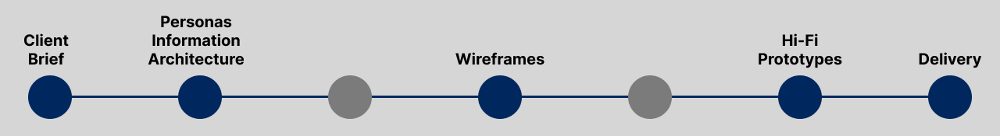

Humber Events Platform
Designing the Perfect Events Platform
The Humber Events Platform is a site designed for Humber College for event
attendees and organizers to browse and purchase tickets, and create events
respectively within the Humber College community and beyond.
Industry
Events Management
Role & Team
UX Designer, Team of 4
What I did
Reducing Administrative Load
Humber College experienced administrative pain points while managing and
running events through third party applications, resulting in the need for
an in-house platform. Humber College was looking for a platform that could
be used by the general public, students, staff, and faculty to attend and
create events with a deep level of customization and control.
Who's it for?
The Humber Events Platform is for both internal and external stakeholders.
Specifically, our target users are students and parents of students who browse
and purchase tickets to events, and event organizers (faculty, staff,
moderators) who create them.
Working with a Tight Deadline
The project timeline was 7 weeks to deliver the research synthesis,
information architecture, sketches, wireframes, and final prototype in Figma.

Client Meeting & Competitive Analysis
I had a meeting with the client to discuss why they were looking to have a new
platform designed, what their pain points were, and their needs and future
considerations. I Conducted competitive analysis, comparing the current Humber
Events website to Eventbrite as well as event calendars from event companies or city-based
event pages such as Town of Milton and Ink Events. The goal was to look for
visual design and general usability and features that align with the client’s
needs.
Personas
I created personas based on 3 stakeholders so that the team and I could get an
“at a glance” view of our target audience.
Information Architecture
I created a site map to detail key pages and features that the personas would
“follow” to achieve their goal, whether it be finding an event to attend, or
creating an event.
Wireframes
First draft of screens based a wide array of features, laying out information
hierarchy, and basic interactions for both web and mobile. We decided to go for
a mobile-first mentality. I was in charge of creating the mobile wireframes first,
which were then converted into web by my teammate and reviewed by myself for
consistency.
High Fidelity Prototypes
For the final deliverable, I created high fidelity flows for mobile and web,
narrowing down the product to cover these key functions to deliver a minimum
viable product. I was in charge of the event creation forms, homescreen, and
attendee registration and ticket scanning. I reviewed each page to ensure
consistency.
1. Event Creation
Our event creation feature
allows for ample flexibility to create online and offline events, create coupons
and discounts, and price events the way they want.
2. Browsing and Purchasing Tickets
What's an events platform without events that you can go to?
3. On-site Registration
Event organizers are able to scan guests' tickets at the door.
Increasing Efficiency of Event Creation Forms
Another consideration was the event creation form. Initially, I split it into 3 steps: Event Details, Tickets,
and Summary. The client wanted promo codes to be considered, and we initially had them in the “edit event”
section. This meant that promo codes could not be available upon event creation, so I created a fourth step
to cover promo codes, which gives event creators more flexibility.
Learning to Trust My Team
This project marked the first time working with web developers and a content
strategist. It was a challenge because at the beginning I was only vaguely
aware of their role and expertise, and how I could help and provide value to
them with my own knowledge, especially due to the final deliverable being a
prototype in Figma that wasn’t to be further developed. I had to trust that they
had adequate knowledge of the tools, methods, and data synthesis to help complete
the project.
Next time, I would try to make better use of my teammates. I felt
like I had an obligation to really touch every aspect of the project, which had
me spread too thin. This harkens back to the idea of trusting the knowledge and
talents of my team.